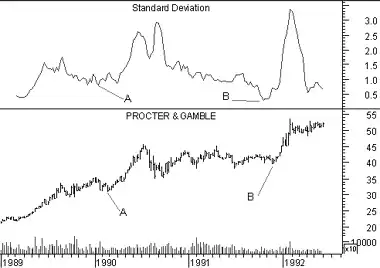

Standard Deviation
Overview
Standard Deviation is a statistical measure of volatility. Standard Deviation is typically used as a component of other indicators, rather than as a stand-alone indicator. For example, Bollinger Bands are calculated by adding a security's Standard Deviation to a moving average.
Interpretation
High Standard Deviation values occur when the data item being analyzed (e.g., prices or an indicator) is changing dramatically. Similarly, low Standard Deviation values occur when prices are stable.
Many analysts feel that major tops are accompanied with high volatility as investors struggle with both euphoria and fear. Major bottoms are expected to be calmer as investors have few expectations of profits.
Example
The following chart shows Proctor & Gamble and its 10-week Standard Deviation.
 The extremely low Standard Deviation values at points "A" and "B" preceded significant rallies at points 1 and "2."Calculation

Where:
Standard Deviation is derived by calculating an n-period simple moving average of the data item (i.e., the closing price or an indicator), summing the squares of the difference between the data item and its moving average over each of the preceding n-time periods, dividing this sum by n, and then calculating the square root of this result.